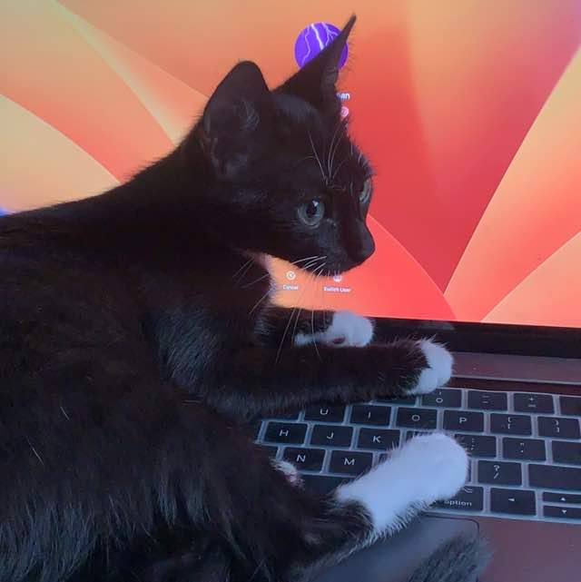

Welcome to my corner of the digital realm! I'm a passionate web developer who has embarked on an exciting journey of self-discovery and skill acquisition. My expertise has been honed through the invaluable resources provided by Learn Enough to be Dangerous tutorials, which have served as my compass in navigating the vast landscape of web development. From coding elegant layouts that harmonize form and function, to crafting interactive user experiences that captivate and engage, I've meticulously built my toolkit of languages and technologies. With a deep-rooted curiosity and an unwavering commitment to excellence, approach each project as an opportunity to weave code into creativity. Join me as I continue to traverse the dynamic realm of web development, armed with the knowledge and confidence to transform imaginative ideas into fully functional digital realities.

Greetings! I'm thrilled to share my unique journey with you. Armed with a BSc in Physics from the esteemed University of Port Harcourt, I embarked on a remarkable transition that led me to the captivating world of web design and development. My voyage took a serendipitous turn after I founded the thriving 4joan Accessory Store, an endeavor that ignited my passion for creating immersive online experiences. Eager to broaden my horizons, I delved into the realm of self-study, immersing myself in the intricacies of web development. This pursuit culminated in the birth of Uptopgit , my brainchild portfolio website. Uptopgit not only showcases my journey but also encapsulates my dedication to constant growth and innovation. As I meticulously blended theoretical knowledge with hands-on experience, I found myself scaling new heights and refining my skills in the ever-evolving landscape of web design. Join me as I continue to push boundaries, armed with the foundation of physics, the creativity of web design, and the resilience of self-driven progress.

Musician, Web Designer & Web Developer
ASCAP Society
Learn Enough Soceity

Welcome to 4joan Accessory Store, an online treasure trove dedicated to the art of vintage luxury eyewear. Here, we celebrate the timeless allure of classic eyewear, offering a curated collection that encapsulates the elegance and sophistication of bygone eras. Our journey began with a passion for preserving the craftsmanship and allure of vintage eyewear, and it has evolved into a haven for connoisseurs of style and nostalgia. At 4joan, we believe that eyewear is more than just a functional accessory; it's an embodiment of history, culture, and individuality. Our discerning selection features a range of meticulously restored and carefully sourced vintage eyewear pieces that harken back to iconic moments in fashion history. Each frame tells a story, a fusion of craftsmanship and design that stands the test of time. Our commitment to authenticity is unwavering. Every piece in our collection has been meticulously examined and restored, ensuring that you receive not only a piece of eyewear but also a piece of history. Whether you're seeking the understated elegance of a 1950s cat-eye frame or the bold lines of a 1980s aviator, our collection offers a journey through the evolution of eyewear styles. 4joan Accessory Store isn't just a destination for vintage eyewear enthusiasts; it's a community of individuals who appreciate the artistry and nostalgia of luxury eyewear. Join us as we explore the stories behind each frame, celebrate the craftsmanship of eras past, and rediscover the allure of vintage eyewear that remains eternally chic. Your journey into the world of vintage luxury eyewear starts here, at 4joan.
Welcome to Uptopgit, a digital canvas where my journey as a self-taught web developer comes to life. As an aspiring creator, I embarked on an odyssey to master the art of web development, driven by curiosity and a passion for crafting immersive online experiences. Uptopgit is more than just a portfolio website – it's a testament to countless hours of dedication, experimentation, and growth. Hosted on GitHub Pages, Uptopgit stands as a proud showcase of my skills and accomplishments in the world of web development. From the very inception of the concept to the meticulous design and meticulous coding, every element of this website reflects my commitment to continuous improvement. The decision to deploy it on GitHub Pages was a natural one, aligning with my ethos of learning in public and embracing the collaborative spirit of the developer community. Uptopgit's design is a reflection of my evolving taste and style, with clean lines, intuitive navigation, and a seamless user experience at its core. By creating this digital hub, I aimed to capture not only my technical prowess but also my dedication to aesthetic finesse and innovation. It's not just a collection of projects; it's a story of progression – from my humble beginnings to the confident strides I take today. Whether you're exploring the intricacies of code, browsing through the projects that encapsulate my growth, or simply getting to know the person behind the pixels, Uptopgit invites you to share in my journey. As you navigate through the pages, may you find inspiration, insight, and a sense of the limitless possibilities that self-taught determination can unlock in the world of web development. Welcome to Uptopgit – where code, creativity, and curiosity converge.